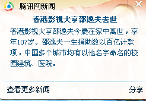

Conversation with 81184027 at Tue 07 Jan 2014 10:45:32 AM CST on 154115835 (webqq)
(01/06/2014 11:07:18 PM) 心灵爱语: 可是人家不尊重呀
(01/06/2014 11:03:34 PM) 柠檬-杭州: 真心 请大家 尤其是有孩子的家长 好好看 变形记啊 湖南卫视啊 现在 啊 刚才好多 义工 和旅游和 国学群的 群友们都在 叫我看 看到落泪 太真实感人了 :face5:
正在播
(01/06/2014 11:07:18 PM) 心灵爱语: 可是人家不尊重呀
(01/06/2014 11:03:34 PM) 柠檬-杭州: 真心 请大家 尤其是有孩子的家长 好好看 变形记啊 湖南卫视啊 现在 啊 刚才好多 义工 和旅游和 国学群的 群友们都在 叫我看 看到落泪 太真实感人了 :face5:
正在播
(10:52:06 AM) 光: 学佛的最重要的是对众生要有悲心
(10:52:39 AM) 光: 有悲心自然不会陷于争辩了
(10:54:42 AM) 埃及无雪: 嗯，任何宗教都是：爱
(10:55:14 AM) 埃及无雪: 概括为一个字
(10:55:44 AM) 光: 嗯
(10:58:01 AM) 光: 机锋棒喝的目的也只是为了点醒梦中人，并非是为了争辩长短
(11:05:36 AM) 柠檬-杭州: 
(11:06:12 AM) 埃及无雪: 是的
(11:06:54 AM) 埃及无雪: 这位老人也做了不少的善事呢，让人敬佩:强:
(11:07:28 AM) 光: 嗯
(11:07:46 AM) 光: 可见评价一个人重点还是在于他为世界留下什么
(11:22:40 AM) 埃及无雪: 是的，人无完人
(11:23:20 AM) 埃及无雪: 让世人记住你的善行，足已
(11:27:12 AM) 光: ：）
(11:27:17 AM) 光: 真正修行的人呢
(11:27:30 AM) 光: 連虛名也要看破
(11:32:37 AM) 光: 以前的有德行的人能讓罪人主動懺悔過失，確實不容易的
(11:34:00 AM) 光: 世人過於看重虛名，所以極少能懺悔自己的過失的
(11:35:28 AM) 埃及无雪: 是的，那是大善，我们普通做小善B-)
(11:35:38 AM) 光: ：）
(11:36:46 AM) 埃及无雪: 我妈妈巨搞笑
(11:37:00 AM) 柠檬-杭州: 捡起垃圾 让个作为 都是慈善 保护环境 节约水电 粮食 是对子孙后代最大的慈善 这是老外教育我的
(11:37:07 AM) 柠檬-杭州: 让个座位
(11:37:32 AM) 埃及无雪: 她有次把蟑螂捧出去，说是放生，我被震惊了
(11:37:36 AM) 埃及无雪: :p:p:p
(11:37:51 AM) 埃及无雪: 是的，茶
(11:39:30 AM) 埃及无雪: 有时候我自己没有座位，会叫其他人给孕妇和老年人让座，一般选面善或者年轻人（男性，学生）:p:p
(11:41:48 AM) 埃及无雪: 虽然觉得蟑螂很脏，不过也挺感动，以后不要轻易踩死那些生命的动物了
(11:43:49 AM) 柠檬-杭州: 在家在饭店 不浪费粮食 就是最大的慈善了 我们资助的山区儿童 至今都营养不良 饭都吃不上 真的
(11:44:16 AM) 埃及无雪: 是的，:强::强:
(11:45:43 AM) 埃及无雪: 吃多少做多少
(11:47:23 AM) 光: 「大道之行也，天下為公，選賢與能，講信修睦。故人不獨親其親，不獨子其子，使老有所終，壯有所用，幼有所長，矜、寡、孤、獨、廢疾者皆 有所養，男有分，女有歸。貨惡其棄於地也，不必藏於己；力惡其不出於身也，不必為己。是故謀閉而不興，盜竊亂賊而不作，故外戶而不閉，是謂大同。」這段話 包括世界的大同、政治的大同、社會的大同、經濟的大同…在內。「天下為公」是世界的大同，也是實現大同主義的先決條件；「選賢與能，講信修睦」是政治大 同；「不獨親其親，不獨子其子」，「男有分，女有歸」，「力惡其不出於身也，不必為己」是社會的大同；「使老有所終，壯有所用，幼有所長，矜、寡、孤、 獨、廢疾者皆有所養」，「貨惡其棄於地也，不必藏於己」，是經濟的大同；「是故謀閉而不興，盜竊亂賊而不作，故外戶而不閉」，這就是一種太平世的到來，為 世界的大同、政治的大同、社會的大同、經濟的大同之終極。為什麼把世界的大同放在第一位呢？因為大同始於「天下為公」，政治、社會、經濟的大同俱由「天下 為公」而來。
(11:48:45 AM) 光: 大道之行也，天下為公，選賢與能，講信修睦。故人不獨親其親，不獨子其子，使老有所終，壯有所用，幼有所長，矜、寡、孤、獨、廢疾者皆 有所養，男有分，女有歸。貨惡其棄於地也，不必藏於己；力惡其不出於身也，不必為己。是故謀閉而不興，盜竊亂賊而不作，故外戶而不閉，是謂大同。
(11:52:13 AM) 埃及无雪: 嗯
(11:53:48 AM) 光: 選賢與能，講信修睦。
(11:54:42 AM) 埃及无雪: 若人人能把自己能力能够达到的小同、小道、小孝做好，这个世界就没有大道、大同、大孝发挥的余地了:p:p
(11:56:09 AM) 光: 嗯
(11:56:33 AM) 光: 大同的運行雖是歷史發展的必然，但 國父主張「循進化之理，由天演至人為」，這就是說，對於「天然之進化」，要「以人事速其進行」。所謂「以人事速其進行」，就是有目的地來實行大同主義，這樣自然就要有方法了，方法為何？是即實行三民主義。 國父說「我們想造成一個完完全全的新世界，一定要用三民主義來做建設新世界的工具」。所謂「工具」即方法，「新世界」即指大同世界。因此，三民主義即實行大同的方法：
一、由民族主義到大同： 國父說：「余之民族主義，特就先民所遺留者，發揚而光大之，且改良其缺點，對於滿洲，不以復仇為事，而務與之平等共處於中國境內。對於世界諸民族，務保持吾民族之獨立地位，發揚吾固有之文化，且吸收世界之文化而光大之，以期與諸民族並驅於世界，以馴致於大同」。可見 國父的民族主義主張國內各民族平等和世界各民族平等，就能「馴致大同」。因為世界各民族都能實現民族主義，則世界各民族都能獨立自主，都能與別的民族平等相處，而走上國際互助、「天下為公」的世界大同了。所以胡漢民先生說：「世界主義是民族主義的理想，民族主義是世界主義的實行。」戴季陶先生也說：「民族主義同時就是大同主義的基礎」。
二、由民權主義到大同：民權主義是政治制度，對於人民的權利、政府的組織、人民和政府的關係都有很具體的主張。所以 國父稱「民權為人類進化之極則」。因此，民權主義有普遍性和世界性，如其所有國家均能實行民權主義，於是一切國家的政治均必趨於大同。所以 國父認為「孔子說：『大道之行也，天下為公』，便是主張民權的大同世界。」
三、由民生主義到大同：因民生主義主張經濟建設與社會建設同時兼顧，達到安和的境地，其所用的具體辦法是平均地權、節制資本，其努力的法則，在教養兼顧、民生樂利。因此，民生主義就是實行經濟大同和社會大同的方法了。所以 國父在「民生主義」第一講開宗明義的說：「民生主義即是大同主義。」
要實行大同主義，建立一個大同世界，不是一蹴可及的。大同的到來，須隨時代的發展，「循序以進，不為倖獲」。所以要達到世界的大同，必先實行國家的大同， 國父說：「我們三民主義的意思，就是民有民治民享。這個民有民治民享的意思，就是國家為人民所共有，政治為人民所共管，利益為人民所共享。照這樣的說法，人民對於國家，…什麼事都是可以共的。人民對於國家什麼事都可以共，纔是真正達到民生主義的目的。這就是孔子所希望的大同世界。」這一段表明 國父是要把「天下為公」的大同思想，先應用於國內，而後致力於大同世界。
(12:00:11 PM) 埃及无雪: 嗯，国父的想法非常好
(12:00:51 PM) 埃及无雪: 共产主义也很美
(12:01:08 PM) 光: ：）
(12:01:36 PM) 埃及无雪: :p:p
(12:05:43 PM) 光: 所以 國父又說：「今世界先覺之士，鼓吹大同主義者已不乏其人。我五大種族，皆愛和平、重人道，若能擴充其自由、平等、博愛之主義於世界人類，則大同之軌 豈難致乎？」先總統 蔣公也說：「三民主義的國家，乃天下為公的大同世界的真基礎。總理革命的目的，不僅要建立中華民國，而且要實現大同世界；但是一定要 先建立三民主義的國家，然後纔可以促進世界大同。」（秦孝儀）
(12:09:11 PM) 光: 天下為公，世界大同，是儒家政治的最高目標，也是三民主義的終極理想，古今中外的人類，都普遍存在著對大同世界的憧憬。這大致可區別為宗教的、哲學的、理 想的、政治的（實踐的）。在宗教方面，如基督教的天國，佛教的極樂世界；在哲學方面，如柏拉圖（Plato）的「理想國」（The Republic）， 儒家的「禮運大同章」；在理想方面，如湯馬斯‧摩耳（Sir Thomas More）的「烏托邦」（Utopia） ，法蘭西斯‧培根（Francis Bacon）的「新樂土」（New Atlantis），安特利亞 （Jobn Vloention Andreae）的「基督城」（Christian Opolis），康柏內拉（Thomas Companella） 的「太陽之城」（City of The Sun）及聖西門（Saint-Simon）、傅立業（F﹒Fourier）等人的社會主義烏托邦思想，陶淵明 的「桃花源記」；在政治方面—即實踐的，有 國父的大同主義及馬克斯（Karl Marx）的所謂「共產天堂」。這些，除馬克斯主義已為人類帶來「階級鬥 爭」、「暴力革命」的慘變浩劫之外，其餘都是對未來世界的憧憬。而其中以 國父的三民主義纔是真正為未來的社會提供了一套具體實踐的方略，那就是先求中國 的自由平等，次求全世界各民族一律平等，在國際互助互信之下，共同作未來計畫，為人類和平、幸福作創造性的服務，建設一個安和樂利的理想社會，這亦即 國 父所時常樂道「禮運大同章」中指出的：「大道之行也，天下為公，選賢與能，講信修睦，…是謂大同」的大同世界。
(12:10:08 PM) 埃及无雪: 理论很好，遗憾的是先让大陆给沦陷了:D:D:p:p
(12:10:24 PM) 光: 「大同」一詞，源出於「禮記」的「禮運篇」，鄭玄註云：「同猶和也，平也。」孔穎達疏云：「率土皆然，故曰大同。」顧名思義，「大同」即「大致相同」， 大致相同就是容許在大同之中有各種「小異」，並非要「遠近大小若一」什麼事都可以強同的。最足以代表大同主義精神的，莫過於「禮運篇」中關於大同的一段 話：「大道之行也，天下為公，選賢與能，講信修睦。故人不獨親其親，不獨子其子，使老有所終，壯有所用，幼有所長，矜、寡、孤、獨、廢疾者皆有所養，男有 分，女有歸。貨惡其棄於地也，不必藏於己；力惡其不出於身也，不必為己。是故謀閉而不興，盜竊亂賊而不作，故外戶而不閉，是謂大同。」這段話包括世界的大 同、政治的大同、社會的大同、經濟的大同…在內。「天下為公」是世界的大同，也是實現大同主義的先決條件；「選賢與能，講信修睦」是政治大同；「不獨親其 親，不獨子其子」，「男有分，女有歸」，「力惡其不出於身也，不必為己」是社會的大同；「使老有所終，壯有所用，幼有所長，矜、寡、孤、獨、廢疾者皆有所 養」，「貨惡其棄於地也，不必藏於己」，是經濟的大同；「是故謀閉而不興，盜竊亂賊而不作，故外戶而不閉」，這就是一種太平世的到來，為世界的大同、政治 的大同、社會的大同、經濟的大同之終極。為什麼把世界的大同放在第一位呢？因為大同始於「天下為公」，政治、社會、經濟的大同俱由「天下為公」而來。
(12:10:38 PM) 光: 「大同」即「大致相同」， 大致相同就是容許在大同之中有各種「小異」，並非要「遠近大小若一」什麼事都可以強同的。
(12:11:06 PM) 光: 這是儒家的思想
(12:11:23 PM) 埃及无雪: 嗯
(12:12:36 PM) 埃及无雪: 大同不能靠几个人，国民素质提高了，才有基础。普及教育，反对愚昧洗脑
(12:12:48 PM) 光: 嗯
(12:12:45 PM) 埃及无雪: 民族才有希望
(12:13:00 PM) 埃及无雪: 世界大同才有可能实现
(12:14:44 PM) 埃及无雪: 摈弃狭隘的民族主义
(12:15:01 PM) 光: 嗯
(12:20:14 PM) 埃及无雪: 国家能大同已经很不错了，世界大同，太难，比如朝鲜那种恐怖国家，拉下人类世界文明几百年:L:L:L
(12:21:18 PM) 埃及无雪: 你跟它讲大同，小心机关枪立马扫射过来:p:p:p:D:D
(12:22:05 PM) 光: 這就是儒家的優勢了
(12:22:10 PM) 光: 不強同
(12:23:00 PM) 光: 先求中國 的自由平等，次求全世界各民族一律平等，在國際互助互信之下，共同作未來計畫，為人類和平、幸福作創造性的服務，建設一個安和樂利的理想社會
(12:23:27 PM) 埃及无雪: 嗯
(12:36:40 PM) 光: 大同世界 http://ap6.pccu.edu.tw/Encyclopedia/image/interface/line-1.gif 中國文化之最高境界，即為大同世界之理想。其致治皆以大同為期，不以獨善為足，例如書經載曰：「協和萬邦」（堯典）、「蠻夷 率服」（舜典）、「萬邦咸寧」（大禹謨）、「萬邦黎獻」（益稷）。可見大同世界之思想，早在上古即已相當成熟，所以禮記禮運篇更將大同之治的景況為之具體 描述，如曰：「大道之行也，天下為公，選賢與能，講信修睦；故人不獨親其親，不獨子其子；使老有所終，壯有所用，幼有所長，鰥寡孤獨廢疾者，皆有所養。男 有分，女有歸。貨惡其棄於地也，不必藏於己；力惡其不出於身也，不必為己。是故謀閉而不興，盜竊亂賊而不作，故外戶而不閉，是謂大同」。對此，孟子有所解 釋，並稱之為仁政，如曰：「老而無妻曰鰥，老而無夫曰寡，老而無子曰獨，幼而無父曰孤；此四者，天下之窮民而無告者。文王發政施仁，必先斯四者。」（梁惠 王下）要而言之，欲使社會中之「老有所終」與「幼有所長」，其關鍵則在「壯有所用」，亦即壯年人必須充分就業，能如此，則老者自有所終，幼者自有所長；不 如此，則老者難得所終，幼者難得所長。換言之，就業率高，社會則安；就業率低，社會則亂。進而言之，欲使壯者樂於就業，與勤於就業，其關鍵則在「男有分， 女有歸」，亦即壯年男女，必須適齡而婚，適齡而嫁，使得社會中真正「內無怨女，外無曠夫」（孟子、梁惠王下）。蓋其「怨女」而怨於內，則家庭必不祥；「曠 夫」而曠於外，則社會必不安；內而家庭不祥，外而社會不安，欲求「老有所終」與「幼有所長」，則誠屬緣木求魚之不可得也。故曰：此為齊家之要道，此為治國 之至理。 社會之中，凡女皆得其「歸」，凡男皆安其「分」，則首由一國之內，自可「化彼競爭之性，而達我大同之治也」（ 國父：實業計畫自序）。必須 先求社會之安和樂利，再求國家之富強獨立，然後始可推及萬國，以實現大同世界， 國父指示其途徑曰：「我們要將來能夠治國、平天下，便先要恢復民族主義和 民族地位；用固有的道德和平做基礎，去統一世界，成一個大同之治。」（民族主義第六講）可知世界大同之主體，則為中華民國；而世界大同之動力，則為三民主 義；所以 國父曰：「要濟弱扶傾，才是盡我們民族的天職。」（民族主義第六講）亦所以我們之國歌曰：「三民主義，吾黨所宗；以建民國，以進大同。」蓋以民 國可以速建，而大同則須漸進也。（湯承業）
(12:38:41 PM) 发送失败,错误号:1:
大同世界 http://ap6.pccu.edu.tw/Encyclopedia/image/interface/line-1.gif 中國文化之最高境界，即為大同世界之理想。其致治皆以大同為期，不以獨善為足，例如書經載曰：「協和萬邦」（堯典）、「蠻夷 率服」（舜典）、「萬邦咸寧」（大禹謨）、「萬邦黎獻」（益稷）。可見大同世界之思想，早在上古即已相當成熟，所以禮記禮運篇更將大同之治的景況為之具體 描述，如曰：「大道之行也，天下為公，選賢與能，講信修睦；故人不獨親其親，不獨子其子；使老有所終，壯有所用，幼有所長，鰥寡孤獨廢疾者，皆有所養。男 有分，女有歸。貨惡其棄於地也，不必藏於己；力惡其不出於身也，不必為己。是故謀閉而不興，盜竊亂賊而不作，故外
(12:39:15 PM) The account has disconnected and you are no longer in this chat. You will automatically rejoin the chat when the account reconnects.